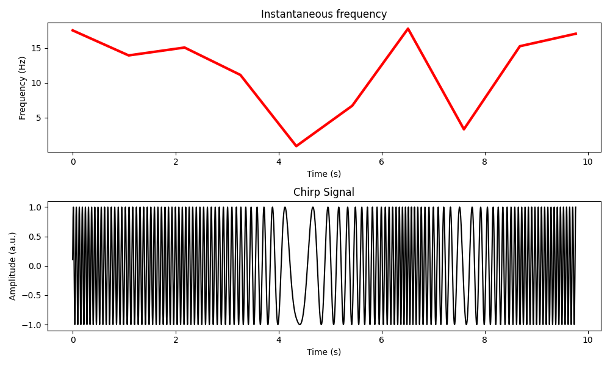

Time_series_noise_simulation
chirps
- generate_chirp_signal(pnts: int, srate: int, chirp_type: str = 'bipolar', k: int = 10) Tuple[ndarray, ndarray, ndarray][source]
Generate a chirp signal. A chirp signal is a frequency modulate wave.
- Parameters:
pnts (int) – Number of data points.
srate (int) – Sampling rate.
chirp_type (str, optional) – Type of chirp signal (‘bipolar’ or ‘multipolar’). Default is ‘bipolar’.
k (int, optional) – Number of poles for frequencies in case of ‘multipolar’ chirp. Default is 10.
- Returns:
Time vector, instantaneous frequency, and generated chirp signal.
- Return type:
Tuple[np.ndarray, np.ndarray, np.ndarray]
eeg_data
- topoplot_indie(Values: ndarray, chanlocs: List[dict], headrad: float = 0.5, grid_scale: int = 67, circgrid: int = 201, headcolor: List[int] = [0, 0, 0], hlinewidth: float = 1.7, blankingringwidth: float = 0.035, headringwidth: float = 0.007, plotrad: float = 0.6, shading: str = 'interp', contournum: int = 6, electrodes: str = 'on') Tuple[Axes, List[int], ndarray][source]
Plot topographic map of independent values on scalp.
Parameters: - Values (numpy.ndarray): Independent values for each electrode. - chanlocs (List[dict]): List of dictionaries containing channel locations. - headrad (float): Actual head radius. - grid_scale (int): Number of points in the grid for plotting. - circgrid (int): Number of angles to use in drawing circles. - headcolor (List[int]): RGB values for the default head color. - hlinewidth (float): Default linewidth for head, nose, and ears. - blankingringwidth (float): Width of the blanking ring. - headringwidth (float): Width of the cartoon head ring. - plotrad (float): Radius of the plotting circle. - shading (str): Shading type (‘flat’ or ‘interp’). - contournum (int): Number of contours in the plot. - electrodes (str): Display mode for electrodes (‘on’, ‘labels’, ‘numbers’).
Returns: - handle (plt.Axes): Matplotlib Axes object. - pltchans (List[int]): Indices of channels plotted. - epos (numpy.ndarray): Electrode positions.
non_stationary_noise
- simulate_eeg_data(pnts: int = 4567, srate: int = 987, peakfreq: int = 14, fwhm: int = 5) Tuple[ndarray, ndarray][source]
Simulate EEG data with non-stationary narrowband activity via filtered noise.
Parameters: - pnts (int): Number of data points. - srate (int): Sampling rate. - peakfreq (int): Peak frequency of the narrowband activity. - fwhm (int): Full width at half maximum of the narrowband activity.
Returns: - hz (numpy.ndarray): Frequency values. - signal (numpy.ndarray): Simulated EEG data.
sin_gaus_euler_function
- plot_each_sine_wave(frex: List[float], amplit: List[float], phases: List[float]) None[source]
Plots each individual sine wave.
- Parameters:
frex (list[float]) – List of frequencies for each sine wave.
amplit (list[float]) – List of amplitudes for each sine wave.
phases (list[float]) – List of phases for each sine wave in radians.
- Returns:
None
- plot_eulers_formula(M: float, k: float) None[source]
Plots Euler’s formula.
\[M e^{i k } = M(\cos{k} + i\sin{k})\]- with:
M : distance from the origin
k : angle in respect to the positive real axis
- Parameters:
M (float) – Magnitude of the complex number.
k (float) – Phase angle of the complex number in radians.
- Returns:
None
- plot_gaussian(ptime: float, ampl: float, fwhm: float) None[source]
Plots a Gaussian curve.
Gaus formula:
\[a e^{\frac{- (t-m)^2}{2 s^2}}\]- with:
m : time point at peak
t : time
s : width
\[a e^{\frac{-4 \ln{2} t^2}{fwhm^2}}\]- with:
fwhm : full width at half maximum (s)
t : time
fwhm is a more more easy tunable and understainable parameter to tun guassian function as s
- Parameters:
ptime (float) – Peak time of the Gaussian curve.
ampl (float) – Amplitude of the Gaussian curve.
fwhm (float) – Full-width at half-maximum of the Gaussian curve.
- Returns:
None
- plot_sine_wave(freq: float, srate: int, ampl: float, phas: float) None[source]
Plots a sine wave.
Sin wave formula:
\[a\sin({2 \pi f t + \theta})\]- with:
a : amplitude
f : frequency
t : time
theta : phase shift
- Parameters:
freq (float) – Frequency of the sine wave in Hz.
srate (int) – Sampling rate in Hz.
ampl (float) – Amplitude of the sine wave.
phas (float) – Phase of the sine wave in radians.
- Returns:
None
- plot_sum_of_sine_waves(frex: List[float], amplit: List[float], phases: List[float]) None[source]
Plots the sum of multiple sine waves.
- Parameters:
frex (list[float]) – List of frequencies for each sine wave.
amplit (list[float]) – List of amplitudes for each sine wave.
phases (list[float]) – List of phases for each sine wave in radians.
- Returns:
None